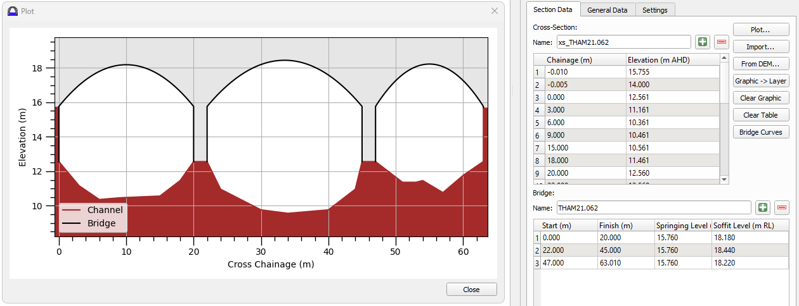
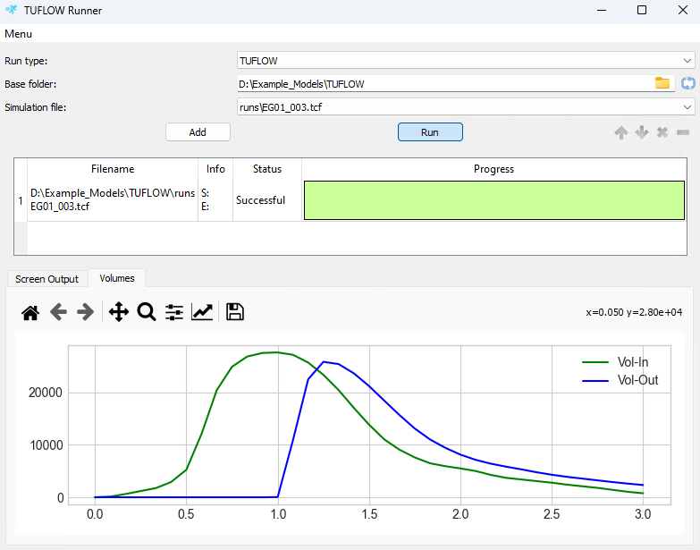
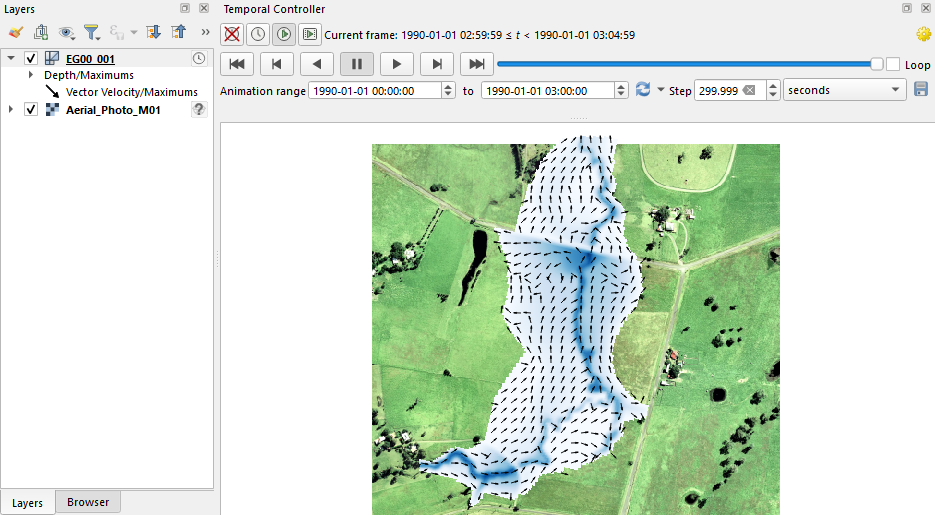
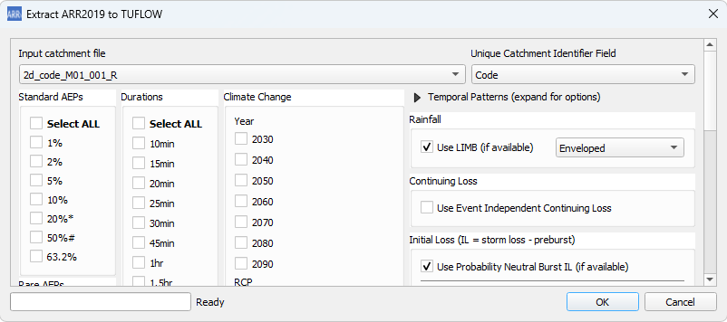
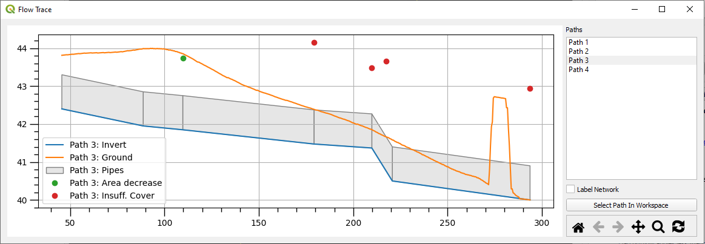
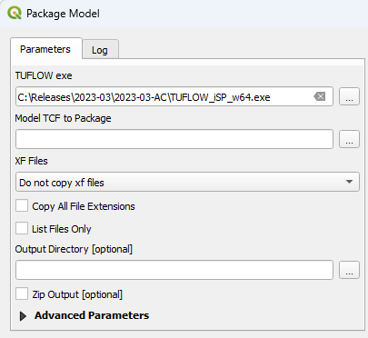
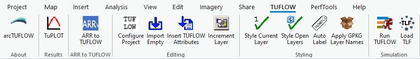

| Category | Tool | Example |
|---|---|---|
Editing Tools |
Create or Configure TUFLOW Project Import Empty (template GIS file) Insert TUFLOW Attributes to Existing Layer Arch Bridge Editor - shown in example image. |
 |
Run Tools |
TUFLOW Runner - shown in example image. |
 |
Visualisation Tools |
TUFLOW Viewer - shown in example image. |
 |
Hydrology Tools |
ARR to TUFLOW - shown in example image. |
 |
Integrity Tools |
1D Integrity Tool - shown in example image. |
 |
Processing Toolbox |
Convert TUFLOW Model GIS Format Package Model - shown in example image. |
 |
17 Utilities
The TUFLOW Utilities are a set of tools that can be used to convert input data for use in a TUFLOW model, or to process / manipulate the raw 2D result files produced from a model simulation. Many of the utilities are console window executables similar to the TUFLOW engine, however some are macros for use in Excel or Python scripts. GIS based utilities have also been developed for QGIS, ArcGIS, and MapInfo.
The current version of TUFLOW on Linux (2026.0.0) does not include these utilities.
The utilities do not require a TUFLOW licence to utilise.
17.1 GIS Based Utilities
17.1.1 QGIS TUFLOW Plugin
If you are using QGIS as your model development or result viewing environment, we strongly recommend installing the TUFLOW QGIS Plugin. It includes numerous tools to increase workflow efficiency and powerful result viewing functionality via its TUFLOW Viewer. After installing, the tools can be found within the TUFLOW QGIS Plugin Menu or the QGIS TUFLOW Processing Toolbox.
This QGIS Plugin is actively developed, with new versions released frequently. Please send any feedback, recommendations or new feature ideas to support@tuflow.com.
17.1.2 ArcGIS Pro Toolbar
The ArcGIS Pro Toolbar, shown in Figure 17.1, helps with streamlining the process of creating and editing a TUFLOW model in ArcGIS Pro. It is available for download on the TUFLOW Website. For information on installation and the tools available within the ArcGIS Pro Toolbar, see the TUFLOW Wiki ArcGIS TUFLOW Toolbar page.

The ArcGIS Pro Toolbar is actively developed. Please send any feedback, recommendations or new feature ideas to support@tuflow.com.
17.1.3 ArcMap Toolbox
The ArcMap Toolbox is available for ArcMap version 10.1 and newer. The toolbox helps with streamlining the process of creating and editing a TUFLOW model in ArcMap. For more information on the ArcMap Toolbox, see the TUFLOW Wiki ArcTUFLOW Toolbox and Toolbar page.
The ArcMap Toolbox is no longer actively developed.
17.1.4 MiTools
MapInfo and TUFLOW Productivity Utilities (miTools) were developed to improve the efficiency of setting up and reviewing TUFLOW models, as well as improving the day to day ease of using MapInfo Professional. For information on miTools, see the TUFLOW Wiki MiTools Tips page.
MiTools are no longer actively developed.
17.2 Console Utilities
The TUFLOW Console Utilities are like the TUFLOW engine in that they are command window executables with no user interface. They are available for download from the TUFLOW Website.
The TUFLOW Wiki TUFLOW Utilities page provides a comprehensive list of available options for each utility along with further examples.
Please send any feedback, recommendations or suggestions on the Utilities to support@tuflow.com.
17.2.1 Pre and Post Processing
The following utilities are available to assist in pre and post processing:
These Utilities can also be downloaded and run directly through the TUFLOW QGIS Plugin.
17.2.2 Convert to TUFLOW
The following utilities are available to assist in converting model files from other software to TUFLOW:
Refer to the relevant pages to view the details with regards to the conversion approach.
17.2.3 Textfile Syntax Highlighting
As described in Section 2.2, TUFLOW requires the use of control files to bring together the various GIS and tabular datasets as well as TUFLOW specific commands. To assist in the creation and review of the control files, syntax highlighting tools have been developed and are available for the following text file editors:
An example of the syntax highlighting is shown in Figure 2.2.
17.2.4 PyTUFLOW
PyTUFLOW is a package of Python tools for extracting TUFLOW time series results. It can be used to automate output tasks such as checking model health, goodness-of-fit for model calibration, viewing on-the-fly model output (used in conjunction with Write PO Online == ON), and high-volume output plotting from production runs. An example of its use for generating calibration plots can be seen here.
More information about the PyTUFLOW package can be found in the PyTUFLOW Documentation.
For worked examples demonstrating the use of PyTUFLOW, please register for the free Introduction to Python for TUFLOW eLearning Course.
17.2.5 Excel Macros
A set of Excel TUFLOW Tools is available for download here. These tools can help with the set up and review of tabular data for input into TUFLOW as well as the review of tabular outputs. Further description of the tools, including setup instructions, is available on the TUFLOW Wiki Excel Tips page.